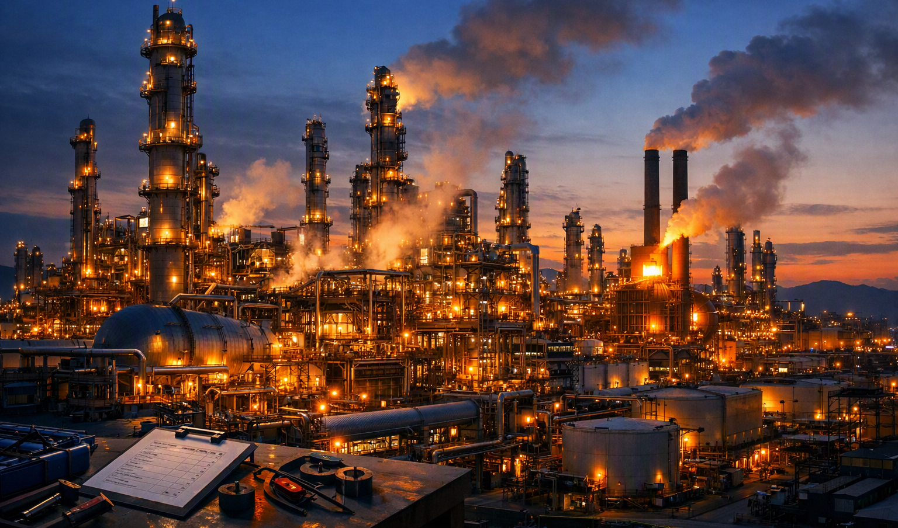

An oil refinery is a large industrial facility that processes crude oil — raw oil from the ground — into useful petroleum products. The refinery is one of the most important steps in the oil and gas industry: without it, crude oil would have no commercial value.
Crude oil is delivered to the refinery by tanker ship, pipeline, or rail tanker. When it arrives, it is stored in large storage tanks — some over 80 metres high — before processing begins.
Inside the refinery, the crude oil is first heated in a furnace and then sent to a tall distillation tower. In the tower, the oil is separated into different products by a process called fractional distillation. Each product has a different boiling point. Light products like petroleum gas rise to the top, while heavy products like fuel oil and asphalt sink to the bottom.
The main petroleum products are: petroleum gas (LPG), petrol / gasoline, kerosene / jet fuel, diesel / petrodiesel, fuel oil, and asphalt / bitumen. After refining, products are stored in tanks and then transported by tanker lorry, rail tanker, boat, or pipeline to customers around the world.
Large refineries are complex operations. They employ hundreds or even thousands of workers — including process technicians, maintenance teams, and safety and environment officers. Refineries must follow strict environmental rules to control noise, odour, air pollution, and water pollution.
🎙️ Listen to the audio, then read the text aloud. Record your audio and send via WhatsApp.